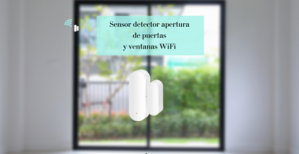

GUÍA COMPLETA SOBRE EL SENSOR DE PUERTAS Y VENTANAS WIFI En este artículo os vamos a demostrar que gracias a estos avances tecnológicos y, en especial, a los dispositivos domóticos o WiFi podemos dotar a nuestros hogares de una seguridad extra a bajo coste y lo más importante, seremos nosotros mismos los que dispondremos del control total sobre ellos. En el mercado hay muchos dispositivos de seguridad inteligente WiFi, en nuestra Web encontraréis una categoría dedicada exclusivamente a ellos, pero el artículo de hoy es dedicado en especial a uno de ellos. Una pista… es muy pequeño, de diseño minimalista, no necesita ningún tipo de instalación y es muy sencillo de utilizar. ¿Os suena de algo? El artículo de hoy va dedicado a nuestro querido Sensor Detector de puertas y ventanas WiFi: Puede que no sea muy común, pero se puede convertir en uno de los dispositivos de seguridad WiFi favoritos, y ya no solo por todas sus ventajas y características, sino por su bajo coste y amplia durabilidad. ¿Queréis saber más sobre él? ¡Allá vamos! Los sensores de puertas y ventanas WiFi son dispositivos pequeños y discretos diseñados para detectar la apertura y cierre de puertas y ventanas en tiempo real. A través de la conexión WiFi, estos sensores envían notificaciones a los móviles, lo que nos permite monitorear y controlar el estado de sus puertas y ventanas desde cualquier lugar que nos encontremos. Características principales de los sensores de puertas y ventanas inteligentes WiFi: 1. Conectividad Inalámbrica: La conexión WiFi elimina la necesidad de cables, facilitando la instalación de los sensores inteligentes y evitando la obstrucción visual. 2. Notificaciones Instantáneas: Los sensores de puertas y ventanas inteligentes WiFi pueden enviar alertas inmediatas a través de la app móvil en caso de actividad sospechosa, mejorando la seguridad de vuestro hogar o negocio. 3. Integración con sistemas de hogar inteligentes: Lo mejor de estos sensores de puertas y ventanas WiFi es que se pueden integrar de manera fácil con sistemas domóticos, lo que permite automatizar acciones como el encendido de luces o la activación de sistemas de seguridad. Por otra parte, vamos a comentar las principales ventajas y beneficios de integrarlos a la seguridad de nuestro hogar o negocio: -Detección temprana:Los sensores de puertas y ventanas WiFi proporcionan un extra adicional de seguridad, detectando cualquier intento de entrada no autorizada en tiempo real. -Control remoto: Los sensores de puertas y ventanas WiFi tienen la capacidad de monitorear y controlar las puertas y ventanas desde dispositivos móviles, esto nos brinda tranquilidad, incluso estando lejos de casa. -Registro: Gracias a la app con las que controlamos y configuramos los sensores de puertas y ventanas WiFi, podemos tener un registro para analizar todas las alertas que se han dado. Como habéis podido comprobar, los sensores de puertas y ventanas inteligentes son un avance en cuanto a integrar diferentes dispositivos de seguridad para proteger los espacios que más necesitas de una manera sencilla y eficaz. Lo podéis conseguir en nuestra Web al mejor precio y con la mejor garantía y servicio post venta para aclarar todas vuestras dudas. |